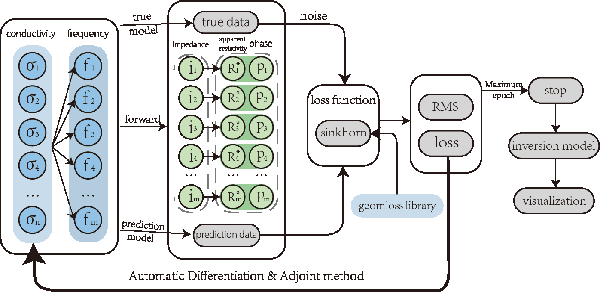
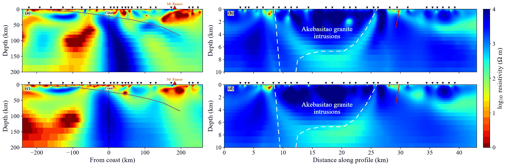

Robust EM imaging
Optimal transport keeps resistivity images stable when data are distorted.
The question
Magnetotelluric (MT) data are routinely distorted by noise and by near-surface effects such as static shift. The usual L2 misfit compares data point by point, so these distortions pass straight into the resistivity image. Can a misfit that compares the overall shape of the data make inversion more robust?
Approach
I built a 2-D MT forward and inverse framework in PyTorch. Gradients come from automatic differentiation and the adjoint method, and the data misfit is a Sinkhorn (optimal-transport) distance, extended to graph space so that it also accounts for where the stations are.

Field data
I applied the framework to two field datasets, a profile across the Cascadia Subduction Zone and a profile over the Akebasitao granite intrusions in the Tianshan, and compared the L2 and optimal-transport misfits on the same data.

Takeaways
- Forward model, misfit and gradients live in one differentiable framework, so new misfits can be tested quickly.
- Optimal-transport misfits make the inversion more robust to noise and distortion than the pointwise L2 norm.
- The method images key structures in two very different settings, from a subduction zone to a granite intrusion.
Outputs
- Oral presentation, EGU General Assembly 2026, Vienna
- Poster, Chinese Geoscience Union Annual Meeting 2025, Chengdu
- Manuscript in preparation for IEEE Transactions on Geoscience and Remote Sensing
- Code: github.com/MTinv-OT/MTinv_OT